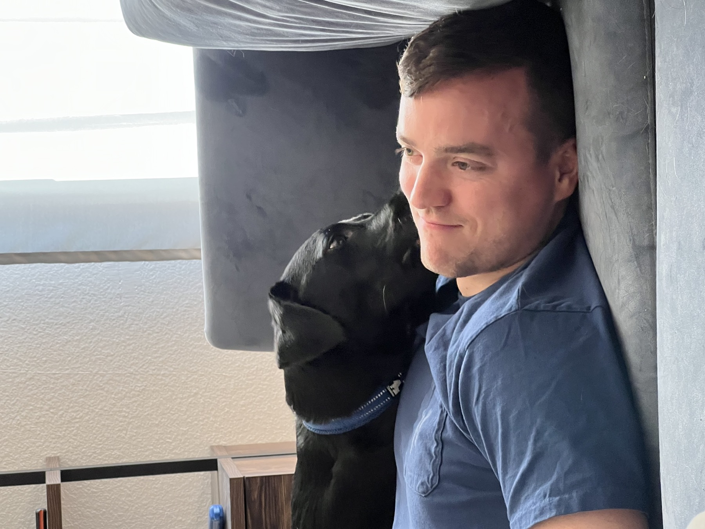

Flight BNB 033 · Point Pleasant → Something real
Now boarding introductions
Brad’s flight plan
One open route. Plenty worth discovering.
Choose a destination to follow Brad and Geno across the map—and learn what they would bring along for the ride.
Live route
Brad & Geno, en route

Home base: beach days, good meals, and the Jersey Shore life Brad genuinely loves.
Captain’s log
The quiet kind of impressive.
Brad is reserved but never removed—the kind of person who reads a room, adapts easily, and makes people feel comfortable. He loves fine dining, the beach, friends, family, and the good dog who chose his lap as a landing zone.
When a stranger needed a bone-marrow donor, Brad answered the call. He didn’t do it for a story. His family is telling it because it says everything.

Miles with meaning
Already connected? Fly this attention somewhere important.
Honor Brad’s grandmother, Lillian, by supporting MS research and families living with the disease.